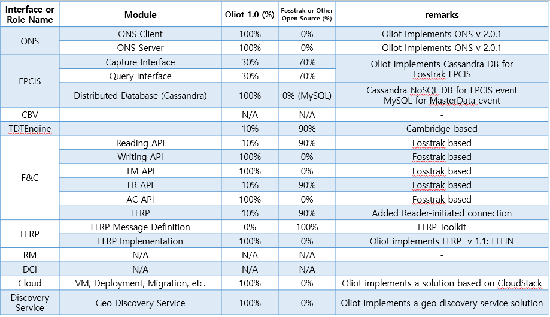

Oliot is aiming an international standard based Internet of Things (IoT) Infrastructure Platform, by extending the code system of GS1 and their standard architecture to support various IoT connectivity and protocols such as bar code, RFID, ZigBee, 6LoWPAN, etc. Oliot also aims a complete implementation of GS1/EPCglobal standard.
Oliot is a spin-off project of Fosstrak (http://fosstrak.org), an open source RFID software platform that implements the GS1 EPC Network specifications. So significant portion of Oliot implementation was derived from that of Fosstrak project.
The name of this project, Oliot is the abbreviation of Open Language for Internet of Things. Also, oliot is the plural form of olio, which means thing or object in Finnish, and means stew of various meats and vegetables in Spanish.


The term Internet of Things was firstly introduced in 1999 by Kevin Ashton at the Auto-ID Labs, MIT (http://www.autoidlabs.org), which is the primary research partner of GS1.
GS1 provides various types of codes such as bar code, RFID code, QR code for thing identification, and standardizing system infrastructure for global business and applications (supply chain, food safety, medication, etc.).
GS1 is making an effort to hold the position of a standard technology for IoT era as well as B2C from B2B via GS1 code extension, GS1 digital, and IoT standard technology development.
Among seven Auto-ID Labs (MIT, Cambridge, ETH Zurich, Keio, Fudan, Adelaide, KAIST) over the world, Auto-ID Lab, KAIST started research and development in IoT field since 2002, starting from the RFID and wireless sensor network technology. And since 2005, we started to develop various IoT technologies that are specialized to GS1 standard.
We are currently working on following projects:
Smart Thing Information Service (STIS), since 2005 to 2011
GS1 EPCglobal Network on the Cloud for Groceries Trace Framework, since 2013
Oliot 1.0 (Current version)

We will integrate Oliot with EPCSN and STIS project in the next release. Specifically, for Oliot-fc, we will generalize Oliot-fc middleware role to process stream-based raw data from various devices to generate refined high-level events following GS1 standard. We are planning to integrate various sensor network protocols (e.g. Zigbee, 6LoWPAN, RESTful device) and other IoT platforms (e.g. MQTT, and AllJoyN). The data from these various devices is abstracted to a concept of stream, for which we will develop stream processing feature. For Oliot-epcis, we will implement EPCIS 1.1 standard which was newly released, and we will define master data of various domains such as mobile health care to promote sharing of EPCIS data in IoT context.
Release plan is as follows,
Oliot is developed at Auto-ID Lab, KAIST, in Daejeon, Korea.
This project is a spin-off project of Fosstrak (http://fosstrak.org).
Related works of this project were funded by following organizations.
Oliot is distributed under LGPL-2.1 license.
You may copy, distribute and modify the software provided that modifications are described inside the modified files and licensed for free under LGPL-2.1. Derivatives or non-separate (statically-linked) works of the software must be licensed under LGPL, but separate, parent projects don’t have to be.
(Summary is referenced from here)